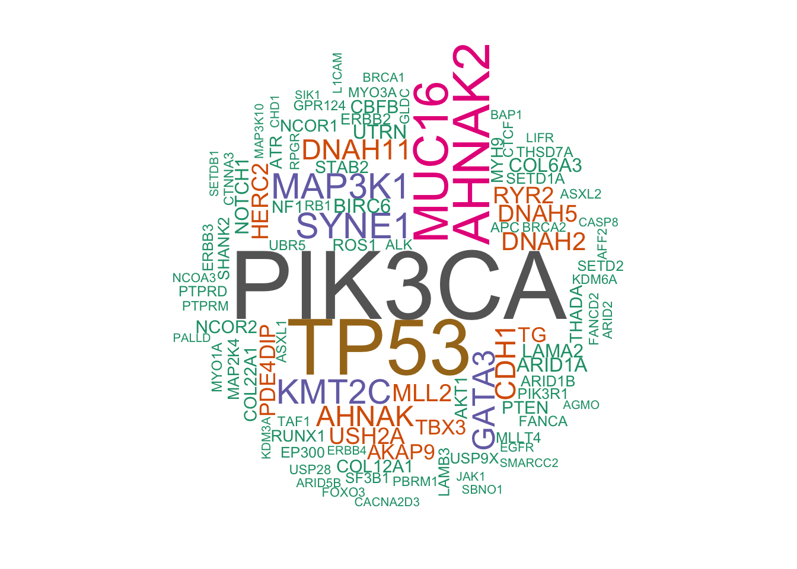

Chapter 3 Metabric data analysis
Now it’s our turn to apply the techniques that we have learned so far in this workshop. In this section, we will explore some datasets that were part of a study characterising the genomic mutations (SNVs and CNAs) and gene expression profiles for over 2000 primary breast tumours. In addition, a detailed clinical information can also be found for this study alongside the experimental data from cBioPortal. The study was published under two prominent publications -
Curtis et al., Nature 486:346-52, 2012
Pereira et al., Nature Communications 7:11479, 2016
FYI, the gene expression data generated using microarrays, genome-wide copy number profiles were obtained using SNP microarrays and targeted sequencing was performed using a panel of 40 driver-mutation genes to detect mutations (single nucleotide variants).
Let’s download the data and save it in the workshop2 folder. We will be plotting different aspects of the patient related information and biological aspect for the sake of exploratory data analysis (EDA). And for that, we will have to merge and format the data provided. Now, let’s load the data one by one using the function read.delim with appropriate parameters -
library(dplyr)
library(ggplot2)
# Load patient data and explore a few of the columns (e.g. BREAST_SURGERY, CELLULARITY,CHEMOTHERAPY, ER_IHC ) -
patient_data <- read.delim("/Users/mahedi/Documents/Collaborations/UCL_CI/metabric/brca_metabric/data_clinical_patient.txt",comment.char = "#", sep = "\t")
patient_data %>% pull(BREAST_SURGERY) %>% table## .
## BREAST CONSERVING MASTECTOMY
## 554 785 1170patient_data %>% pull(CELLULARITY) %>% table## .
## High Low Moderate
## 592 965 215 737patient_data %>% pull(CHEMOTHERAPY) %>% table## .
## NO YES
## 529 1568 412patient_data %>% pull(ER_IHC) %>% table## .
## Negative Positve
## 83 609 1817# Load sample data and explore the ER_STATUS
sample_data <- read.delim("/Users/mahedi/Documents/Collaborations/UCL_CI/metabric/brca_metabric/data_clinical_sample.txt",comment.char = "#", sep = "\t")
sample_data %>% pull(ER_STATUS) %>% table## .
## Negative Positive
## 644 1825# Load CNA data and explore
CNA_data <- read.table("/Users/mahedi/Documents/Collaborations/UCL_CI/metabric/brca_metabric/data_cna.txt",header = T, sep = "\t") %>%
select(-Entrez_Gene_Id) %>%
distinct(Hugo_Symbol, .keep_all = T)
CNA_data[1:10, 1:10]## Hugo_Symbol MB.0000 MB.0039 MB.0045 MB.0046 MB.0048 MB.0050 MB.0053 MB.0062
## 1 A1BG 0 0 -1 0 0 0 0 -1
## 2 A1BG-AS1 0 0 -1 0 0 0 0 -1
## 3 A1CF 0 0 0 0 1 0 0 0
## 4 A2M 0 0 -1 -1 0 0 0 2
## 5 A2M-AS1 0 0 -1 -1 0 0 0 2
## 6 A2ML1 0 0 -1 -1 0 0 0 2
## 7 A2MP1 0 0 -1 -1 0 0 0 2
## 8 A3GALT2 0 0 0 0 0 0 0 -1
## 9 A4GALT 0 0 0 -1 -1 -1 0 1
## 10 A4GNT 0 0 2 0 0 0 1 1
## MB.0064
## 1 0
## 2 0
## 3 0
## 4 0
## 5 0
## 6 0
## 7 0
## 8 0
## 9 0
## 10 0# Load mutation data and explore
mutation_data <- read.delim("/Users/mahedi/Documents/Collaborations/UCL_CI/metabric/brca_metabric/data_mutations.txt",comment.char = "#", sep = "\t")
mutation_data %>% head()## Hugo_Symbol Entrez_Gene_Id Center NCBI_Build Chromosome Start_Position
## 1 TP53 NA METABRIC GRCh37 17 7579344
## 2 TP53 NA METABRIC GRCh37 17 7579346
## 3 MLLT4 NA METABRIC GRCh37 6 168299111
## 4 NF2 NA METABRIC GRCh37 22 29999995
## 5 SF3B1 NA METABRIC GRCh37 2 198288682
## 6 NT5E NA METABRIC GRCh37 6 86195125
## End_Position Strand Consequence Variant_Classification
## 1 7579345 + frameshift_variant Frame_Shift_Ins
## 2 7579347 + protein_altering_variant In_Frame_Ins
## 3 168299111 + missense_variant Missense_Mutation
## 4 29999995 + missense_variant Missense_Mutation
## 5 198288682 + synonymous_variant Silent
## 6 86195125 + synonymous_variant Silent
## Variant_Type Reference_Allele Tumor_Seq_Allele1 Tumor_Seq_Allele2 dbSNP_RS
## 1 INS - - G NA
## 2 INS - - CAG NA
## 3 SNP G G T NA
## 4 SNP G G T NA
## 5 SNP A A T NA
## 6 SNP T T C NA
## dbSNP_Val_Status Tumor_Sample_Barcode Matched_Norm_Sample_Barcode
## 1 NA MTS-T0058 NA
## 2 NA MTS-T0058 NA
## 3 NA MTS-T0058 NA
## 4 NA MTS-T0058 NA
## 5 NA MTS-T0059 NA
## 6 NA MTS-T0059 NA
## Match_Norm_Seq_Allele1 Match_Norm_Seq_Allele2 Tumor_Validation_Allele1
## 1 NA NA NA
## 2 NA NA NA
## 3 NA NA NA
## 4 NA NA NA
## 5 NA NA NA
## 6 NA NA NA
## Tumor_Validation_Allele2 Match_Norm_Validation_Allele1
## 1 NA NA
## 2 NA NA
## 3 NA NA
## 4 NA NA
## 5 NA NA
## 6 NA NA
## Match_Norm_Validation_Allele2 Verification_Status Validation_Status
## 1 NA NA NA
## 2 NA NA NA
## 3 NA NA NA
## 4 NA NA NA
## 5 NA NA NA
## 6 NA NA NA
## Mutation_Status Sequencing_Phase Sequence_Source Validation_Method Score
## 1 NA NA NA NA NA
## 2 NA NA NA NA NA
## 3 NA NA NA NA NA
## 4 NA NA NA NA NA
## 5 NA NA NA NA NA
## 6 NA NA NA NA NA
## BAM_File Sequencer t_ref_count t_alt_count n_ref_count n_alt_count
## 1 NA Illumina HiSeq 2,000 NA NA NA NA
## 2 NA Illumina HiSeq 2,000 NA NA NA NA
## 3 NA Illumina HiSeq 2,000 NA NA NA NA
## 4 NA Illumina HiSeq 2,000 NA NA NA NA
## 5 NA Illumina HiSeq 2,000 NA NA NA NA
## 6 NA Illumina HiSeq 2,000 NA NA NA NA
## HGVSc HGVSp HGVSp_Short
## 1 ENST00000269305.4:c.343dup p.His115ProfsTer34 p.H115Pfs*34
## 2 ENST00000269305.4:c.340_341insCTG p.Leu114delinsSerVal p.L114delinsSV
## 3 ENST00000392108.3:c.1544G>T p.Gly515Val p.G515V
## 4 ENST00000338641.4:c.8G>T p.Gly3Val p.G3V
## 5 ENST00000335508.6:c.45T>A p.Ile15= p.I15=
## 6 ENST00000257770.3:c.924T>C p.Ile308= p.I308=
## Transcript_ID RefSeq Protein_position Codons Hotspot
## 1 ENST00000269305 NM_001126112.2 114 -/C 0
## 2 ENST00000269305 NM_001126112.2 114 ttg/tCTGtg 0
## 3 ENST00000392108 NM_001040000.2 515 gGa/gTa 0
## 4 ENST00000338641 NM_000268.3 3 gGg/gTg 0
## 5 ENST00000335508 NM_012433.2 15 atT/atA 0
## 6 ENST00000257770 NM_002526.3 308 atT/atC 0# Load expression data and explore
expression_data <- read.delim("/Users/mahedi/Documents/Collaborations/UCL_CI/metabric/brca_metabric/data_mrna_agilent_microarray.txt",comment.char = "#", sep = "\t", header = T)
expression_data[1:10, 1:10]## Hugo_Symbol Entrez_Gene_Id MB.0362 MB.0346 MB.0386 MB.0574 MB.0185
## 1 RERE 473 8.676978 9.653589 9.033589 8.814855 8.736406
## 2 RNF165 494470 6.075331 6.687887 5.910885 5.628740 6.392422
## 3 PHF7 51533 5.838270 5.600876 6.030718 5.849428 5.542133
## 4 CIDEA 1149 6.397503 5.246319 10.111816 6.116868 5.184098
## 5 TENT2 167153 7.906217 8.267256 7.959291 9.206376 8.162845
## 6 SLC17A3 10786 5.702379 5.521794 5.689533 5.439130 5.464326
## 7 SDS 10993 6.930741 6.141689 6.529312 6.430102 6.105427
## 8 ATP6V1C2 245973 5.332863 7.563477 5.482155 5.398675 5.026018
## 9 F3 2152 5.275676 5.376381 5.463788 5.409761 5.338580
## 10 FAM71C 196472 5.443896 5.319857 5.254294 5.512298 5.430874
## MB.0503 MB.0641 MB.0201
## 1 9.274265 9.286585 8.437347
## 2 5.908698 6.206729 6.095592
## 3 5.964661 5.783374 5.737572
## 4 7.828171 8.744149 5.480091
## 5 8.706646 8.518929 7.478413
## 6 5.417484 5.629885 5.686286
## 7 6.684893 5.632753 5.866132
## 8 5.266674 5.701353 6.403136
## 9 5.490693 5.363266 6.341856
## 10 5.363378 5.191612 5.208379To begin with, let’s explore the mutation data a bit by plotting the frequency of different types of mutations -
head(mutation_data)## Hugo_Symbol Entrez_Gene_Id Center NCBI_Build Chromosome Start_Position
## 1 TP53 NA METABRIC GRCh37 17 7579344
## 2 TP53 NA METABRIC GRCh37 17 7579346
## 3 MLLT4 NA METABRIC GRCh37 6 168299111
## 4 NF2 NA METABRIC GRCh37 22 29999995
## 5 SF3B1 NA METABRIC GRCh37 2 198288682
## 6 NT5E NA METABRIC GRCh37 6 86195125
## End_Position Strand Consequence Variant_Classification
## 1 7579345 + frameshift_variant Frame_Shift_Ins
## 2 7579347 + protein_altering_variant In_Frame_Ins
## 3 168299111 + missense_variant Missense_Mutation
## 4 29999995 + missense_variant Missense_Mutation
## 5 198288682 + synonymous_variant Silent
## 6 86195125 + synonymous_variant Silent
## Variant_Type Reference_Allele Tumor_Seq_Allele1 Tumor_Seq_Allele2 dbSNP_RS
## 1 INS - - G NA
## 2 INS - - CAG NA
## 3 SNP G G T NA
## 4 SNP G G T NA
## 5 SNP A A T NA
## 6 SNP T T C NA
## dbSNP_Val_Status Tumor_Sample_Barcode Matched_Norm_Sample_Barcode
## 1 NA MTS-T0058 NA
## 2 NA MTS-T0058 NA
## 3 NA MTS-T0058 NA
## 4 NA MTS-T0058 NA
## 5 NA MTS-T0059 NA
## 6 NA MTS-T0059 NA
## Match_Norm_Seq_Allele1 Match_Norm_Seq_Allele2 Tumor_Validation_Allele1
## 1 NA NA NA
## 2 NA NA NA
## 3 NA NA NA
## 4 NA NA NA
## 5 NA NA NA
## 6 NA NA NA
## Tumor_Validation_Allele2 Match_Norm_Validation_Allele1
## 1 NA NA
## 2 NA NA
## 3 NA NA
## 4 NA NA
## 5 NA NA
## 6 NA NA
## Match_Norm_Validation_Allele2 Verification_Status Validation_Status
## 1 NA NA NA
## 2 NA NA NA
## 3 NA NA NA
## 4 NA NA NA
## 5 NA NA NA
## 6 NA NA NA
## Mutation_Status Sequencing_Phase Sequence_Source Validation_Method Score
## 1 NA NA NA NA NA
## 2 NA NA NA NA NA
## 3 NA NA NA NA NA
## 4 NA NA NA NA NA
## 5 NA NA NA NA NA
## 6 NA NA NA NA NA
## BAM_File Sequencer t_ref_count t_alt_count n_ref_count n_alt_count
## 1 NA Illumina HiSeq 2,000 NA NA NA NA
## 2 NA Illumina HiSeq 2,000 NA NA NA NA
## 3 NA Illumina HiSeq 2,000 NA NA NA NA
## 4 NA Illumina HiSeq 2,000 NA NA NA NA
## 5 NA Illumina HiSeq 2,000 NA NA NA NA
## 6 NA Illumina HiSeq 2,000 NA NA NA NA
## HGVSc HGVSp HGVSp_Short
## 1 ENST00000269305.4:c.343dup p.His115ProfsTer34 p.H115Pfs*34
## 2 ENST00000269305.4:c.340_341insCTG p.Leu114delinsSerVal p.L114delinsSV
## 3 ENST00000392108.3:c.1544G>T p.Gly515Val p.G515V
## 4 ENST00000338641.4:c.8G>T p.Gly3Val p.G3V
## 5 ENST00000335508.6:c.45T>A p.Ile15= p.I15=
## 6 ENST00000257770.3:c.924T>C p.Ile308= p.I308=
## Transcript_ID RefSeq Protein_position Codons Hotspot
## 1 ENST00000269305 NM_001126112.2 114 -/C 0
## 2 ENST00000269305 NM_001126112.2 114 ttg/tCTGtg 0
## 3 ENST00000392108 NM_001040000.2 515 gGa/gTa 0
## 4 ENST00000338641 NM_000268.3 3 gGg/gTg 0
## 5 ENST00000335508 NM_012433.2 15 atT/atA 0
## 6 ENST00000257770 NM_002526.3 308 atT/atC 0ggplot(data=mutation_data,mapping = aes(Variant_Classification, fill=Variant_Classification)) +
geom_bar() +
coord_flip()Now we will build a word cloud of genes that had been affected by mutations -
# install.packages("wordcloud")
library(wordcloud)## Loading required package: RColorBrewer# We need the gene name and how many times they are affected by any non-synonymous mutation -
mutation_wordcloud_data <- mutation_data %>%
filter(Consequence != "synonymous_variant") %>%
group_by(Hugo_Symbol) %>%
summarise(freq=n()) %>%
rename(word=Hugo_Symbol)
# Let's find out some highly affected genes -
ggplot(mutation_wordcloud_data %>% filter(freq > 100)) +
geom_col(aes(word, freq)) +
coord_flip()# Now create the word cloud
wordcloud(word=mutation_wordcloud_data %>% pull(word),
freq = mutation_wordcloud_data %>% pull(freq),
scale=c(5,0.5), # Set min and max scale
max.words=100, # Set top n words
random.order=FALSE, # Words in decreasing freq
rot.per=0.35, # % of vertical words
use.r.layout=T, # Use C++ collision detection
colors=brewer.pal(8, "Dark2"))
Now, we will subset the loaded data so that we can merge (or join) them together later. We will create new dataset containing -
Frequency of mutations per patient from
mutation_data.Expression data for selected (but important) genes:
"GATA3","FOXA1","MLPH","ESR1","ERBB2","PGR","TP53","PIK3CA", "AKT1", "PTEN", "PIK3R1", "FOXO3","RB1", "KMT2C", "ARID1A", "NCOR1","CTCF","MAP3K1","NF1","CDH1","TBX3","CBFB","RUNX1", "USP9X","SF3B1"Sub-setting
sample_datausing selected columns:PATIENT_ID, SAMPLE_ID, ER_STATUS, HER2_STATUS, PR_STATUS,GRADE.Sub-setting
patient_datausing selected columns:PATIENT_ID, THREEGENE, AGE_AT_DIAGNOSIS, CELLULARITY, CHEMOTHERAPY, ER_IHC, HORMONE_THERAPY, INTCLUST, NPI, CLAUDIN_SUBTYPE.
And, we will combine all the data based on the patient_ID to create a master dataset that we will use in the rest of the worshop.
# Find out the frequency of mutations per patient
mutation_per_patient <- mutation_data %>%
filter(Consequence != "synonymous_variant") %>%
pull(Tumor_Sample_Barcode) %>%
table() %>%
data.frame() %>%
select(patient_ID = ".", Mutation_count=Freq)
# subsetting and formatting the expression data
sub_expression_data <- expression_data %>%
filter(Hugo_Symbol %in% c("GATA3","FOXA1","MLPH","ESR1","ERBB2","PGR","TP53","PIK3CA",
"AKT1", "PTEN", "PIK3R1", "FOXO3","RB1", "KMT2C", "ARID1A",
"NCOR1","CTCF","MAP3K1","NF1","CDH1","TBX3","CBFB","RUNX1",
"USP9X","SF3B1"))
rownames(sub_expression_data) <- sub_expression_data$Hugo_Symbol
sub_expression_data <- sub_expression_data %>%
select(-Hugo_Symbol,-Entrez_Gene_Id) %>%
t() %>%
data.frame() %>%
mutate(patient_ID = rownames(.))
# subsetting the sample_data
sub_sample_data <- sample_data %>%
select(patient_ID = PATIENT_ID,
sample_ID = SAMPLE_ID,
cancer_type = CANCER_TYPE,
cancer_type_detailed = CANCER_TYPE_DETAILED,
ER_status = ER_STATUS,
HER2_status = HER2_STATUS,
PR_status = PR_STATUS,
Neoplasm_Histologic_Grade = GRADE)
# subsetting the patient data
sub_patient_data <- patient_data %>%
select(patient_ID = PATIENT_ID,
Three_gene_classifier_subtype = THREEGENE,
Age_at_diagnosis = AGE_AT_DIAGNOSIS,
Cellularity = CELLULARITY,
Chemotherapy = CHEMOTHERAPY,
ER_status_measured_by_IHC = ER_IHC,
Hormone_therapy = HORMONE_THERAPY,
Integrative_cluster = INTCLUST,
Nottingham_prognostic_index = NPI,
PAM50 = CLAUDIN_SUBTYPE)
# let's combine the dataset
combined_data <- left_join(sub_patient_data,sub_sample_data, by="patient_ID")
combined_data <- left_join(combined_data, mutation_per_patient, by="patient_ID")
combined_data$patient_ID <- gsub("-",".",combined_data$patient_ID) # replace the '-' sign to '.' in the patient_ID column
combined_data <- left_join(combined_data,sub_expression_data, by="patient_ID")Now, we will generate a scatter plot using the expression data of Estrogen receptor ESR1 against that of transcription factor GATA3. Then we will build our understanding of their co-expression by building a linear model. We will then refine that based on the ER_status (positive or negative) -
ggplot(data = combined_data) +
geom_point(mapping = aes(x = GATA3, y = ESR1))## Warning: Removed 529 rows containing missing values (`geom_point()`).ggplot(data = combined_data %>% na.omit(), aes(x = GATA3, y = ESR1)) +
geom_point() + geom_smooth(method = "lm")## `geom_smooth()` using formula = 'y ~ x'ggplot(data = combined_data %>% na.omit()) +
geom_point(mapping = aes(x = GATA3, y = ESR1,colour = ER_status))ggplot(data = combined_data %>% na.omit(), aes(x = GATA3, y = ESR1,colour = ER_status)) +
geom_point() + geom_smooth(method = "lm")## `geom_smooth()` using formula = 'y ~ x'On a different note, GATA3 expression is ususlly high in Luminal A subtype of breast cancer and also in positive estrogen receptor (ER+) status (Voduc D et. al.). Let’s find out if that’s try for this study -
ggplot(combined_data, aes(PAM50, GATA3)) +
geom_boxplot()## Warning: Removed 529 rows containing non-finite values (`stat_boxplot()`).ggplot(combined_data %>% na.omit(), aes(ER_status, GATA3)) +
geom_boxplot()ggplot(combined_data %>% na.omit(), aes(ER_status, GATA3)) +
geom_violin(aes(fill=ER_status))Now, we will look at the distribution of age of the patients at diagnosis as a function of some selected mutated genes.
mut_gene <- mutation_data %>%
filter(Consequence != "synonymous_variant") %>%
select(gene=Hugo_Symbol,patient_ID=Tumor_Sample_Barcode )
patient_age <- patient_data %>% select(age=AGE_AT_DIAGNOSIS,patient_ID=PATIENT_ID)
plot_data <- left_join(mut_gene,patient_age,by="patient_ID") %>%
filter(gene %in% c("PIK3CA", "TP53", "GATA3", "CDH1", "MAP3K1", "CBFB", "SF3B1")) %>%
mutate(age_cat = case_when(age < 45 ~ "<45",
age >= 45 & age <= 54 ~ "45-54",
age >= 55 & age <= 64 ~ "55-64",
age > 64 ~ ">64",)) %>%
na.omit()
plot_data$age_cat <- factor(plot_data$age_cat, ordered = T, levels = c(">64","55-64","45-54","<45"))
plot_data %>%
group_by(gene,age_cat) %>%
select(gene,age_cat) %>%
summarise(freq=n()) %>%
ggplot() +
geom_col(aes(gene,freq, fill=age_cat), position="fill", colour="black") +
scale_fill_manual(values=c("#568a48","#6fad76","#aac987","#e6ede3")) +
theme_classic()## `summarise()` has grouped output by 'gene'. You can override using the
## `.groups` argument.Can we distinguish any pattern from the plot?
Now, we will try to explore patterns of co-mutation and mutual exclusivity in a set of 21 driver genes (so-called Mut-driver genes) -
#install.packages("splitstackshape")
library(splitstackshape)
library(reshape2)##
## Attaching package: 'reshape2'## The following object is masked from 'package:tidyr':
##
## smiths# create a matrix for the combination of the frequency of mutatated genes and each patient
mat <- t(splitstackshape:::charMat(listOfValues = split( mut_gene$gene,mut_gene$patient_ID), fill = 0L))
# set of 21 Mut-driver genes
mat_gene <- c("PIK3CA","AKT1","PTEN","PIK3R1","FOXO3", "RB1", "KMT2C", "ARID1A","NCOR1","CTCF", "TP53", "MAP3K1", "NF1","CDH1","GATA3","TBX3","CBFB","RUNX1","ERBB2","USP9X","SF3B1")
# create an empty matrix
mat_asso <- matrix(data=NA, nrow = length(mat_gene), ncol = length(mat_gene))
colnames(mat_asso) <- mat_gene
rownames(mat_asso) <- mat_gene
# fill in the cells with log odds ratio for each pairwise association test
for(i in mat_gene){
for(j in mat_gene){
mat_asso[i,j] <- fisher.test(mat[i,],mat[j,])$estimate %>% log()
}
}
# get rid of a triangular half of the matirx
mat_asso[upper.tri(mat_asso, diag = T)] <- 0
ggplot(melt(mat_asso), aes(Var1,Var2)) +
geom_tile(aes(fill=value), colour="white") +
scale_fill_gradient2(low = "#7c4d91", high = "#5e8761",mid = "white", limits = c(-2,2)) +
theme_classic() +
theme(axis.text.x = element_text(angle = 90, vjust = 0.5, hjust=1),
axis.ticks.x = element_blank(),
axis.ticks.y = element_blank(),
axis.line.x = element_blank(),
axis.line.y = element_blank()) +
coord_flip()